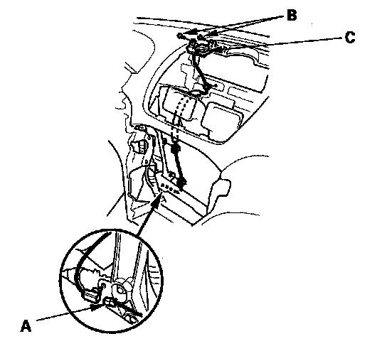

Global Positioning System Antenna: Service and Repair
GPS Antenna Removal/Installation1. Remove the audio unit.
2. Remove the display unit.

3. Disconnect the GPS antenna connector (A), and remove the bolt (B).
4. Remove the GPS antenna (C).
5. Install the antenna in the reverse order of removal.